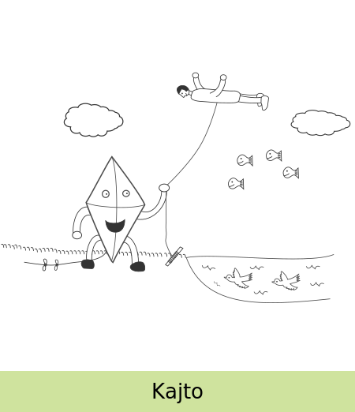

- Estas ekzakte 4 fiŝoj en la sceno.
- La manoj de la homo estas pli proksimaj al la supro de la desegnaĵo ol ĉiu nubo.
- La kajto havas nek nazon, nek dentojn, nek orelojn.
- La ŝnuro de la kajto havas ekzakte 2 nodojn.
- La birdoj direktas maldekstren.
- Videblas herbo en la sceno.
- Ĉiuj birdoj aperas sub la supro de la akvo.
- La ŝnuro kiun la kajto tenas estas ligita al bastoneto.
- Estas almenaŭ unu ŝuo en la sceno kaj neniu ŝuo havas laĉojn.
- La kapo de la homo estas maldekstre de liaj piedoj.